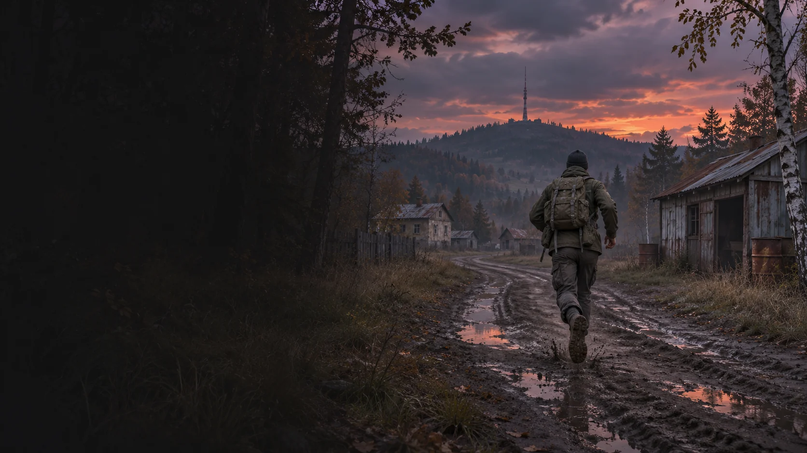

Лупа
Дополнительная оптика.
DayZ Companion объединяет вспомогательные инструменты, их настройки и диагностику в одном бесплатном приложении.
Быстрый доступ к инструментам и их настройкам без разрозненных утилит.
Дополнительная оптика.

Работа с сигналами Морзе.
Настройка изображения.
Управление приглушением звука.

Управление автоматическим бегом.

Настраиваемый экранный прицел.

Инструменты для кодового замка.

Доступ к карте.
Настройки автоматических наклонов.
Единый интерфейс управления вместо множества отдельных окон.
Настраиваемые действия для доступных инструментов.
Подготовка технического отчёта и обращения разработчику.
На скриншотах показан предварительный интерфейс тестовой версии 1.7.0.
Скачайте официальный portable ZIP, распакуйте в удобную папку и запускайте приложение. Сборки размещены в GitHub Releases.
Все сведения об актуальном стабильном релизе ↗Опишите проблему или предложите улучшение. Если у вас есть ZIP обращения из раздела «Поддержка» DayZ Companion, приложите его к форме. В архив можно включить диагностику и выбранный скриншот.
Ваше обращение обрабатывается через Яндекс Формы. Загрузка файла необязательна; размер одного ZIP — до 20 МБ.
Проект бесплатный и развивается благодаря интересу игроков. Если приложение оказалось полезным, вы можете добровольно поддержать автора. Оплата проходит на внешней странице CloudTips.
Нет. DayZ Companion распространяется бесплатно. Добровольная поддержка автора доступна через CloudTips и не влияет на функции приложения.
Нет. Проект распространяется как portable ZIP: достаточно распаковать архив и запустить приложение.
Создайте диагностику в приложении, при необходимости добавьте её и скриншот к обращению в разделе «Поддержка», сохраните общий ZIP и прикрепите его в форме выше.
Правила серверов и требования к сторонним инструментам могут различаться. Пользователь должен самостоятельно проверить разрешённость функций.